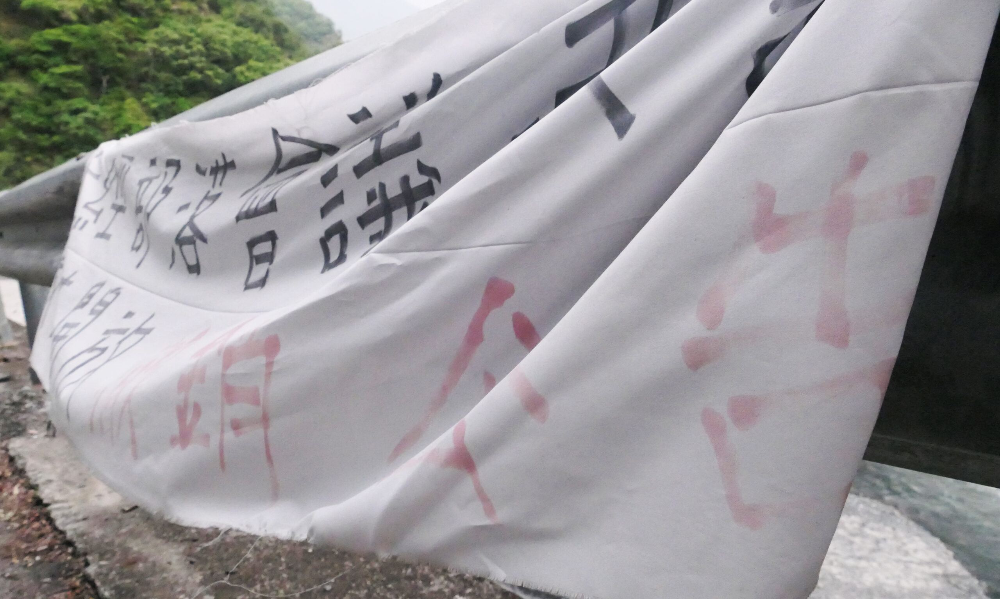

【專題記者顏婕儒、李昀璇、陳楷霖、許如鎧綜合報導】2月17日，一名機車騎士墜谷身亡，這是丹大林道全面開放二輪機車通行後最嚴重的事故。
位處南投縣信義鄉的丹大林道，由曾經盛極一時的振昌木業開發，全長約68公里，自濁水溪直通當地布農族聖地「七彩湖」，號稱台灣最長林道。時過境遷，木業的鼎盛光景湮沒於時代洪流，殘存的丹大林道成為布農族人尋根謁祖的通道。而後又歷經風災的摧殘，如今林道入口「孫海橋」徒留橋墩，一旁距離河面不過咫尺的臨時鋼便橋，則成為進入丹大林道的唯一通道。
隨著山林觀念的解放，人們踏入過往封禁的山林。然而，丹大林道卻在這樣的開放氛圍下陷入進退維艱的泥濘。1月24日，因沒有管理法源的支持，林務局南投林區管理處宣布二輪車進出丹大林道無從管制。消息傳出，大量越野車騎士立即湧入林道挑戰險峻山路，七彩湖畔也出現紮營現象，種種行為對這片土地造成超出其負荷的破壞。當地部落族人於是聚集丹大工作站齊聲抗議，指控政府未與部落充分溝通即逕行決策。不久之後，騎士墜谷的意外不斷傳出，最終更發生死亡事件，丹大林道因此再度封閉。
從木業林道至越野跑道，丹大林道似乎總躲不過多舛的命運。比起修路封閉的權宜之計，訂定長期的規範才能真正弭平發生於此的諸多不幸。然而懸掛孫海橋旁的抗議布條，隱隱映照著丹大議題的種種瓶頸，潛藏於崎嶇的林道之下，似乎又是另一段荊棘重重的坎坷路。
法律的羽翼，究竟何時才能庇蔭這片千瘡百孔的布農領域？
民國108年10月21日，行政院長蘇貞昌參與「向山致敬」記者會，宣布國家山林解禁政策，推動山林開放，林務局也因應政策盤點全台81處林道，赫然發現原屬振昌木業的丹大林道並未被編列其中。追溯其緣由，自93年7月間敏督利颱風造成孫海橋流失後，林務局便宣布將丹大林道改為步道，因此不再屬林務局管轄。
「丹大林道」因名稱關係，過往遊客都謹遵《林道管制執行要點》規範，除公務需求外，多年來僅准許當地布農族人騎乘機車進入，以滿足祭祀需求，其餘人士則透過步行方式進入此領域。然而，若要從入口「合流坪」開始步行，一路到達知名景點七彩湖或百岳之一的「六順山」，單程5、60公里的路途來回約需四、五日，這對許多山友而言並非易事。
於是當地部分族人便利用這條「山路」對原民機車的特許權，組成機車協作團隊（以下簡稱機車協作），推出收費新台幣上萬元的「機車接駁往返服務」。這樣長期遊走於灰色地帶的商業行為引發部分山友不滿，同時造成外界騎士們的反彈，認為族人佔地為王，藉特許權牟奪暴利，長年以來爭議不斷。
為解決丹大林道「無法可管」的現況，2020年南投林管處推出《七彩湖野生動物保護區保育計畫草案》，希望藉由管制七彩湖，進而控管其通道「丹大林道」，並達成總量管制的目的。然而，此計畫立意雖然良好，歷經兩年的討論卻未有共識，這項「彷彿若有光」的提案，又為何至今仍無法開花結果？
僅容一至二人可以步行通過的臨時鋼便橋，只有在濁水溪枯水期才能搭建通過，是現今進入丹大林道的唯一通道。 圖／陳楷霖攝
目前國內用以保護自然環境的資源治理機關包含《文化資產法》之自然保留區、《森林法》自然保護區及《野生動物保育法》動物保護區等等。在過往，管理單位更傾向強制且封閉的經營方式，因此多以限制嚴謹、摒除外力介入的自然保留區為主要手段。而近來林務政策改變，政府傾向和當地居民共同管理並以觀光為主要目的對外開放部分土地，因此本次丹大林道個案，公部門選擇以設立較為彈性、具經營空間之動物保護區為目標，希望顛覆過往由上而下的管理風格，讓族人也能提出經營建議並共同參與，建立「由下而上」的參與式保護區。
透過設立保護區，公部門得以將傳統領域劃分為核心、緩衝、永續利用利用三個區域，並分區制定嚴格程度不一之規定。在丹大林道議題中，若依照南投林管處規劃設立「七彩湖野生動物保護區」，可將入口處劃為永續利用區、在對外開放同時適度管制入內車輛，進而保護內部生態；並於環境負載力較低的區域設立核心區，特殊情況下才供人進入。
根據《原住民族地區資源共同管理辦法》第六條及《原住民族基本法》第21及22條，公部門若要在傳統領域設置保護區等資源治理機關，必須與當地部落建立共管制度，且族人得以分享相關利益。南投縣信義鄉公所農業觀光課課長全皓翔也說明，設立保護區能為部落帶來就業機會，「像是林道的維護、做步道、舊部落石板屋的修建等等……設立保護區後工作機會比原本更多。」
即使保護區的設立看似有利無害，卻仍存在疑慮。國立臺灣大學森林環境暨資源學系副教授盧道杰認為，設立保護區並和部落共同管理為近年演變出的作法，因此較少先例可供參考。此外，當地居民對內部分區範圍也抱持疑問，「他們（指草案）用的野生保護區劃太大了，馬路的左右邊全都劃，我們的舊遺跡也劃，劃的時候也沒跟我們講。」族人幸尚慈說道。
另一方面，雖然保護區的設立可提供族人工作機會，但數量是否足夠、族人是否願意接受工作內容也仍待商榷。政府參與管理後，將對原存在當地的工作型態造成影響，首當其衝的便是機車協作。在法律上，不具接駁執照的機車協作屬「非法接客」，政府介入經營後勢必不允許其存在，即便這部分有機會透過修法以「白牌合法化」等方式解決，但兼職機車協作的幸尚慈卻在表達贊成的同時透露出對公部門的負面觀感，「為甚麼不要去推這東西（指白牌合法化）？而一直是用那種汙衊、打壓說我們是違法的？林務局也沒有跟我們談這些啊！」這句話反映的不只是幸尚慈個人看法，更是群體之間隨著時代衍生出的斷層。

保護區的設立雖立意良善，但由於涉及當地原住民的傳統領域、生計等多重層面，因此容易引發部分民眾不滿。 圖／李昀璇攝
「部落族人總覺得我們都是一直被壓迫然後被限制，所以他們對這個部分還沒有加以了解的時候，先決上就是會有那種拒絕的心。」曾任南投縣信義鄉鄉長以及立法委員的全文盛提及。基於過往的經驗，原住民族與林務局兩者之間存在著鴻溝，且「野生動物保護區」一詞的使用，就更容易造成「只保護動物、不保護當地文化遺跡」的負面觀感。
南投縣信義鄉公所民政課課長王國慶表示，其實近年來因為林務政策的改變，族人與林務局的關係相較過往和緩許多，但因為「是否開放二輪進入丹大林道」的問題，又將兩者拉回對立面。全皓翔更指出，「林務局說他們在去年十二月就有跟地方做協調說一月要做開放，但是我根本沒看到，是看他們的新聞稿才有寫。」現今因台電整修道路封閉，日後依舊會再次開放，對此全皓翔也強調，林務局在與族人的溝通上需要更積極與全面。
林務局曾對設立保護區一事召開公聽會，各部落也曾舉辦部落會議討論相關事宜，不過曾任達瑪巒部落會議主席的松光輝表示，時常只有與自身相關的族人才會參與。王國慶也推估，目前贊成保護區的族人其實較多，但因為影響到部分人生計，反對聲勢才比較浩大。「比較極端他們表達就會比較激烈，也會比較明顯，會比較聽得到，那比較願意能夠配合的人反而就不敢講話。」他補充說明。
達瑪巒部落也曾組成七人小組，協助草擬管理辦法，然而松光輝解釋，過去布農族是以「姓氏」為社群單位，直至日治時期為了方便管理，才形成部落的概念。因此，若以部落為單位劃設傳統領域，彼此之間將難以取得共識。再加上與七彩湖相關區域其實不只有南投和花蓮的12個部落，還有因距離較遠而未能被列入其中的南投明德、豐丘等部落，也都在當地有祖籍地。對此，王國慶建議，「還是要有一個公開的平台，可能四個部落，甚至是全鄉只要有祖籍地在那邊的一個平台去處理（丹大議題）。」
對於雙方不信任的現狀，全文盛說：「政府在看問題的時候不能從表象去思考。」他建議政府應考量原民本身的文化，並且不一定要以保護區的名稱管制，族人接受度就會提高。國立政治大學民族學系教授官大偉也強調，「對於歷史的揭發才是真正能夠重新去和解的關鍵。」在溝通時不能只使用國語，不同語言或是文化可能在翻譯上有所誤差，必須要進行多層次的溝通。他更認為透過讓族人參與資源管理系統，是一次解決雙方矛盾的機會。
保護區的設立雖立意良善，但由於涉及當地原住民的傳統領域、生計等多重層面，因此容易引發部分民眾不滿。 圖／李昀璇攝
部落共管制度的建立有賴族人間的積極溝通，官大偉指出，若要營造健全的內部對話空間，需提供全體族人共同參與的誘因，因此制定合理的分配原則，讓每個人都享有利益便成為首要之務。位處新竹縣尖石鄉的泰雅族部落——司馬庫斯，即施行著一套完善的觀光利益共享機制。民國84年，擁有珍貴神木群的司馬庫斯，隨著聯外道路開通，吸引大批旅客湧入。雖然部落的觀光收益急遽提升，族人間的情感卻因內部的惡性競爭而疏離，同時， 政府宣告欲在當地設立國家公園，也引發族人的激烈反彈。為因應內外衝擊的局面，部落內部展開一系列的積極協商，六年後，司馬庫斯成功建立共營制度，一路施行至今，成為國內部落共營的最佳典範。
回首二十年前的司馬庫斯，對比如今的丹大林道，兩地除了傳統領域同屬觀光熱點，部落內部也同樣面臨保護區域設立的爭議。對此，官大偉認為，除了參考利益共享制度的設立，也須同時考量文化和語言的傳承。「青少年對於他們生活所在的環境森林，都有持續的認識，就變成一代一代的力量。」他指出，司馬庫斯透過帶領青少年進入山林巡守，並在教育體制中進行語言傳承，同樣有助於參與式管理的運行。
丹大林道發生墜谷事件後，山地原住民立委伍麗華立即前往當地，與部落族人和林務局討論因應對策。針對保護區設立與否，伍麗華雖認同法律可形成保護傘，但他也強調政府應與族人慢慢建立信賴。曾擔任屏東縣原民處處長的他，任內即成功輔導大武部落設立自然人文生態景觀區，不僅穩固部落的觀光收益，也維護傳統領域的生態環境。位處屏東縣霧台鄉的大武部落，隨著哈尤溪的七彩岩壁帶來觀光人潮，遊客私自闖入與環境破壞等問題接踵浮現，在原民處、觀光局與部落的努力下，當地成功劃設景觀區，以進行數量管制，並全面禁止外人私闖劃設領域或私下帶團行為，遊客若想進入秘境，需提前預約並由當地導覽員引領入內。
遠望他鄉的成功案例，再回看丹大林道關係部落，當地的立法路程仍因無法取得共識而受阻。「丹大林道到底想要做什麼？」伍麗華建議部落應先釐清發展方向，決議後再建立共享機制，讓無法參與其中的族人也能受惠，藉此提高參與度並達到共識。針對政府方，他則認為地方機關應積極與部落溝通，並長時間陪伴族人，才能化解原住民對政府的不信任感。
對於丹大議題的錯綜複雜，前達瑪巒部落會議主席松光輝直言此事件，從過去的歷史到現在都是環環相扣的。 圖／許如鎧攝
即使過去壓迫的風氣不再，山林開放的觀念亦日漸興盛，官民間溝通的欠缺、過往歷史的壓迫、未能順時隨俗的法規等問題，仍舊堆疊出丹大議題停滯不前的現況。「現在要達到那個目標是不容易的，因為除了族人能接受以外，還要受到大眾的接受才可以。」松光輝直言。這片已經滿載傷痕的土地，亟需政府與族人間積極的協調，更需要社會大眾的正視，才可能再次映現它的盎然生機與布農文化。然而，這段跌宕的長路將耗時多久？又將去往何方？至今都依然是個未知數。
盡頭的光，究竟何時才能照拂丹大林道？